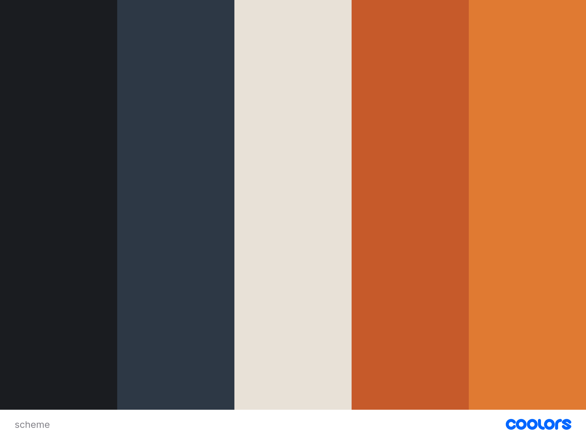
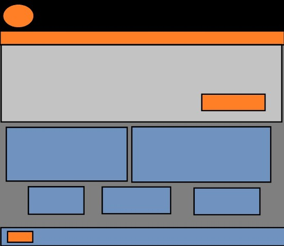
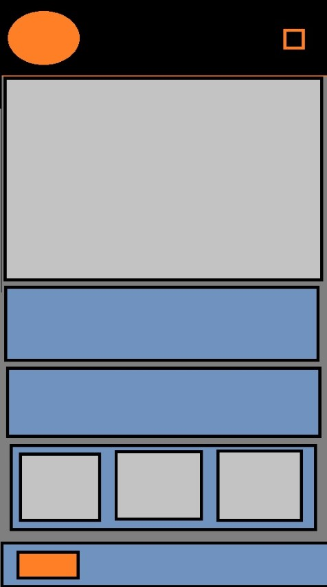

Scenario 1
How did World War 1 tanks influence the design of modern vehicles?
Machines of War: Vehicles from World War I
The name "Machines of War" was chosen because it highlights the vehicles that shaped World War I and emphasizes their role in advancing technology that later influenced civilian transportation and engineering.

Showcases the different types of vehicles (land, air, and sea) used in the First World War, their progressions in forwarding the war effort, and the innovations and technology they brought to civilian use.
How did World War 1 tanks influence the design of modern vehicles?
What technological advancements were made in WW1 aircraft and how are they used today?
What innovations developed for WWI naval vessels later became common in commercial shipping and transportation?
| Role | Color | Hex |
|---|---|---|
| Background | Deep Charcoal | #1A1C20 |
| Secondary Background | Gunmetal Blue | #2D3845 |
| Primary Text | Off-White | #E8E1D7 |
| Accent | Burnt Orange | #C65A2A |
| Hover / Highlight | Amber Orange | #E07A32 |
Deep Charcoal will be used as the main background color, Gunmetal Blue for content cards and sections, Off-White for body text, Burnt Orange for headings and accents, and Amber Orange for hover effects and highlights.

Typography inspired by websites focused on vehicles, engineering, and military history.

